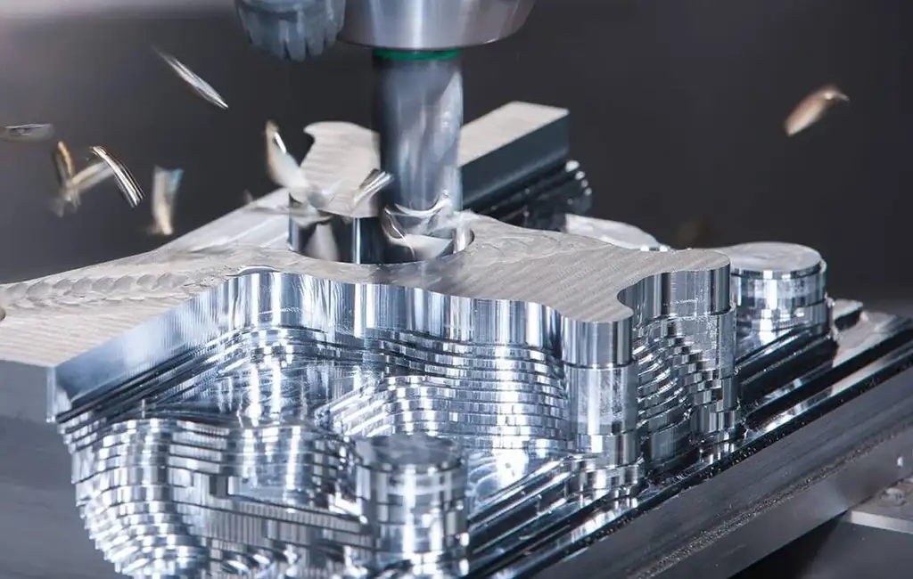

History
The Ancient Beginnings
Hand tools & early shaping
In ancient times, artisans used chisels, files, and bow drills to shape wood and soft metals.
The Lathe (~1300 BC)
One of the earliest machine tools, the two-person lathe, allowed people to rotate a workpiece while cutting it, laying the groundwork for turning operations.
19th Century: Machine Tool Boom
Rise of milling, planers, and shapers
The 1800s saw a surge in machine tool development. Milling machines enabled precise cutting of flat surfaces, slots, and gears. Planers and shapers were used to create large, flat surfaces.
Standardization & precision
Engineers like Henry Maudslay and Joseph Whitworth advanced precision engineering with screw-cutting lathes and measurement standards, making interchangeable parts possible.
Industrial growth
Machine shops became critical to railroads, steam engines, and weapon production.
Early 20th Century: Power & Automation
Electric motors
Electric motors replaced overhead line shafts, improving safety and flexibility in factories.
Tool material advances
High-speed steel and later carbide allowed cutting harder metals at faster speeds.
More sophisticated machines
Machines grew, incorporating hydraulic and early electric controls, paving the way for semi-automated processes.
Post-WWII: NC & CNC revolution
Numerical Control (NC)
Numerical control emerged in the late 1940s and 1950s, using punched tape to control machine motions automatically.
Computer Numerical Control (CNC)
CNC replaced tapes with digital computers in the 1970s, vastly improving flexibility, repeatability, and the ability to machine complex 3D shapes.
Computer-Aided Manufacturing (CAM) software
CAM began to integrate with design, automating the transition from CAD (Computer-Aided Design) models to machine instructions.
Today: High-Tech Machining
Multi-axis CNC machines (5+ axes)
Multi-axis machines handle complex parts with fewer setups, increasing efficiency and precision.
Advanced cutting tools
Coated carbide, ceramics, PCD tackle tough alloys and composites.
Hybrid Manufacturing
Hybrid manufacturing combines metal 3D printing and CNC machining to make intricate parts.
Industry 4.0 & smart machining
Sensors, data analytics, and automation let machines monitor and optimize cutting in real-time, while robotic systems handle loading and quality checks.